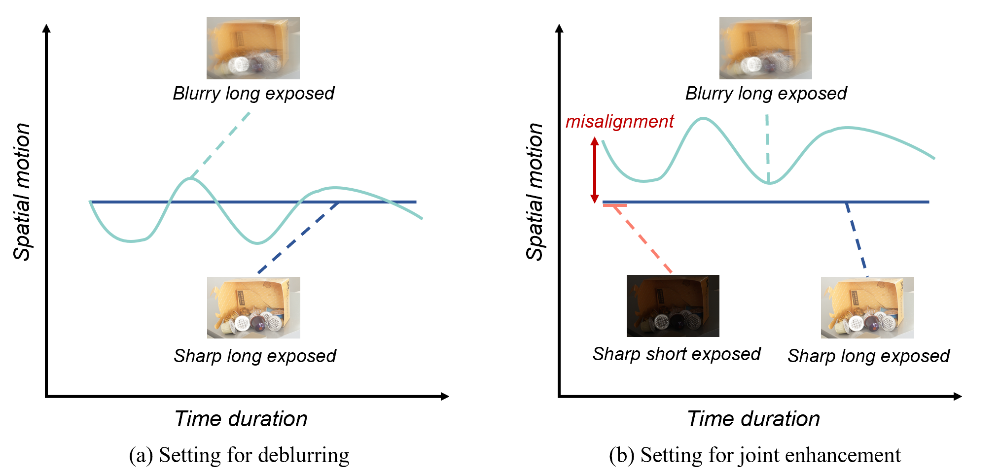

Low-Light Enhancement with Ambient Guidance via Deformable Band Regression
(Supplementary Material)
Haofeng Huang, Shuhong Zheng, Wenhan Yang, Ling-Yu Duan, Jiaying Liu
1. Implementation Details
We adopt the Adam Optimizer [1] with an initial learning rate of 1 × 10−4 and set hyperparameters at β1 = 0.9, β2 = 0.999 and the weight decay parameter equals to 1 × 10−4. We randomly crop 256 × 256 patches during training and adopt a two-stage training process. The model is first trained for 1.5 × 105 iterations. Then we finetune the model with an initial learning rate of 1 × 10−5 for 3 × 104 iterations. The batch size of both training stages is 8. The model is trained on 4 NVIDIA Titan Xp GPUs. The whole training process takes about 20 hours.
The dataset is collected with three different DSLRs among different scenes including outdoor scenes without strong light source and indoor scene with the light off in the evening. Some images are omitted because they are too dark to capture any useful information. To collect a triplet of data,
1) find a static low-light scene without moving objects,
2) fix the camera with a tripod,
3) take a photo with short exposure (low light image collected),
4) switch the shutter speed using remote control and take a photo with long exposure (normal light image collected),
5) relax the tripod, take a long exposure photo with apparent motion (blurry ambient guidance collected).
We collect 300 triplets of data as an evaluation dataset for low light enhancement or deblurring or joint enhancement. Note that two versions of blurry ambient guidance are provided as shown in Fig. 1: (a) blurry image is aligned with the normal light image, i.e. the normal light image serves as the beginning of the motion, and (b) blurry image is NOT aligned with the normal light image. The former is for deblurring task and the latter is for joint enhancement where misalignment can not be avoided.

Figure 1. Two different settings for different tasks.
2. Results on Low-Light Inputs at Different Illumination Levels
In this section, we show the experimental results of using the same long-exposure reference to enhance the low-light images with different illuminance levels. The results can be seen in Fig. 2. We can observe that for the single-image low-light enhancement models the illuminance level of the enhanced image goes up as the input low-light image gradually becomes brighter. Thus, their predictions frequently fall into overexposure or underexposure when the illumination of their inputs is relatively high or low. However, there is no more ambiguity for our LECNet. The predictions from our LECNet all match the illumination of the given long-exposure reference. It also demonstrates that our LECNet obtains the illumination information entirely from the long-exposure image. Therefore, it is not disrupted by the illuminance level of the input low-light image.

Figure 2. Qualitative results of using 7 different low-light inputs with increasing illuminance levels (Level I: lowest illuminance level, Level VII: highest illuminance level). The results of single-image enhancement methods (KinD++ [4] and RUAS [5]) vary greatly when the input low-light image changes. By contrast, outputs of our LECNet are roughly the same, with the illuminations matching the long-exposure reference.
3. More Experimental Results
More visual results of our LECNet compared with other methods are referred to Fig. 3. The results of our LECNet are closer to the ground truth with clear details and consistent illumination levels.


Figure 3. More qualitative comparison with other methods. The top two rows show the results in the LEC-LOL-Syn dataset. The bottom two rows show the results in the LEC-LOL-Real dataset.
Results on MIT-Adobe FiveK are presented. We synthesize ambient guidance on this dataset using the same setting with our LEC-LOL-Syn. To verify the generalization, all models are trained on the LEC-LOL-Syn and evaluated on MIT-Adobe FiveK.
Table 1. Quantitative comparisons on other datasets. Bold indicates the best performance.
| Methods | PSNR | SSIM | LPIPS | |||
|---|---|---|---|---|---|---|
| KinD | 14.71 | 0.756 | 0.176 | |||
| RUAS | 9.53 | 0.610 | 0.301 | |||
| Retinex-Net | 12.30 | 0.687 | 0.258 | |||
| CERL | 15.83 | 0.719 | 0.222 | |||
| Restormer | 24.13 | 0.811 | 0.156 | |||
| MAXIM | 20.45 | 0.683 | 0.331 | |||
| DJF | 22.64 | 0.792 | 0.399 | |||
| LSD2 | 23.51 | 0.801 | 0.205 | |||
| Ours | 25.33 | 0.823 | 0.132 |
We also evaluate how the scale of misalignment in synthetic image pairs effects the performance, as shown in Table 1.
Table 2. Results with different misalignment scales
| Misalignment | PSNR | SSIM | LPIPS | ||||
|---|---|---|---|---|---|---|---|
| s = 0 | 31.21 | 0.9033 | 0.0873 | ||||
| s = 10 | 30.86 | 0.9043 | 0.0880 | ||||
| s = 20 (Ours) | 30.61 | 0.9029 | 0.0894 | ||||
| s = 30 | 30.22 | 0.8961 | 0.0882 | ||||
| s = 40 | 29.71 | 0.8733 | 0.1151 |
From another perspective, the low light input also acts as a "contexture guidance" for deblurring the blurry input. For this setting, misalignment is introduced not between the blurry input and the ground truth, but between the low light input and the ground truth. The experimental results also show how the "contexture guidance" benifits the deblurring task, as shown in Table 2.
Table 3. Evaluation on how low light input benefits deblurring.
| Deblurring | PSNR | SSIM | LPIPS | |||
|---|---|---|---|---|---|---|
| w/o the low light input | 19.84 | 0.7015 | 0.2812 | |||
| w/ the low light input | 22.14 | 0.8051 | 0.1623 |